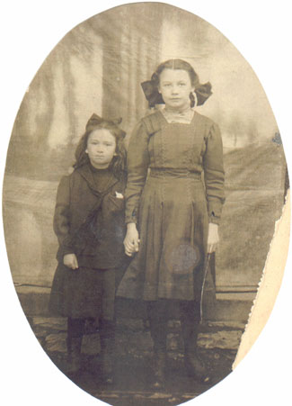

Dorothy Burns
1902 - ?
Dorothy Burns was born in 1902 to Irish immigrants Catherine and Michael Burns.

Young Dorothy with elder sister Christine.
Parents:
Catherine Esther Higgins
1859 - 1943
Michael Burns
1852 - 1910
Offspring:
UNKNOWN
References:
1. Virginia Craig
Last Modified: 12 May 2004 by
Brad Wogsland
.